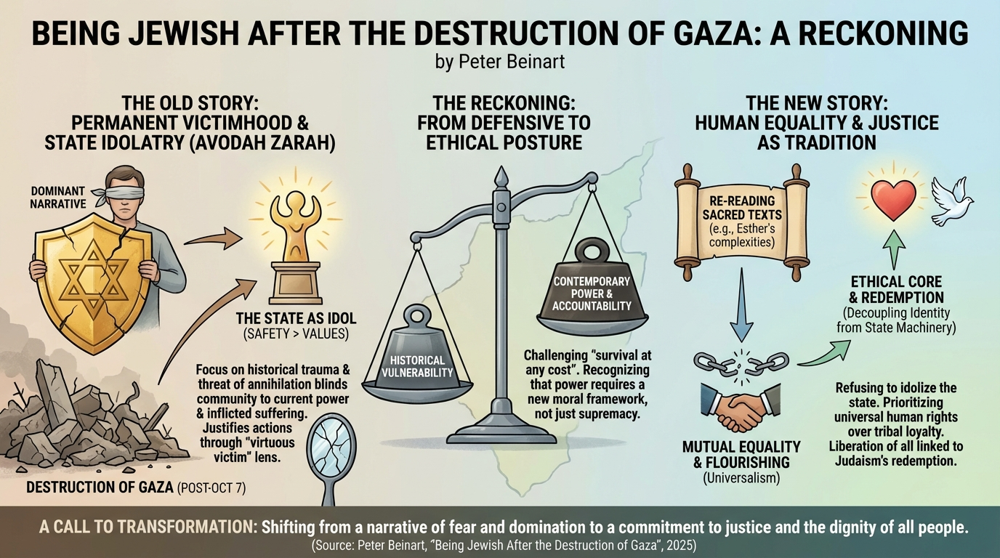

isbn-13: 9780590000000
Hardcover
AI Generated Content
Generated by gemini-3-pro-preview

Introduction
“Being Jewish After the Destruction of Gaza: A Reckoning” by Peter Beinart is a political and theological critique published in early 2025. In this work, Beinart addresses the profound moral crisis facing the Jewish community in the wake of the events of October 7 and the subsequent war in Gaza. He argues that the dominant narrative of Jewish life—one rooted primarily in the memory of persecution and the status of the “virtuous victim”—has become a dangerous blinder. This narrative, he contends, obscures the reality of Jewish power and the suffering inflicted by the State of Israel. The book serves as a call for a “new story” of Jewish identity, one that refuses to idolize the state and instead prioritizes human equality and justice as the true expression of Jewish tradition [1] [2].
Overview of the Key Points
Beinart structures his argument around the necessity of shifting from a defensive posture of survival to an ethical posture of accountability.
The Failure of the “Old Story” Beinart posits that the traditional Jewish narrative, which focuses exclusively on historical trauma and the threat of annihilation, is no longer sufficient or moral in an era of Jewish sovereignty. He suggests that viewing every conflict through the lens of the Holocaust allows the community to justify actions—such as mass starvation or bombardment in Gaza—that would otherwise be unconscionable. By clinging to the identity of the permanent victim, the community fails to recognize when it has become the victimizer [1].
Re-reading Sacred Texts A significant portion of the book is dedicated to re-interpreting Jewish texts to highlight the complexities of power. Beinart points to the Book of Esther, traditionally celebrated during Purim as a story of survival against a genocidal decree. He highlights the often-overlooked conclusion of the story, where the Jews preemptively massacre their enemies. By engaging with these difficult passages, Beinart illustrates that the potential for violence and domination has always existed within the tradition, and ignoring it leads to moral failure [2].
The Idolatry of the State Beinart draws on the concept of Avodah Zarah (idolatry) to critique the modern relationship between the Jewish diaspora and Israel. He argues that for many, the State of Israel has ceased to be a political instrument for safety and has instead become an object of worship. Citing thinkers like Yeshayahu Leibowitz, he warns that elevating a nation-state to something holy inevitably leads to the desecration of human life, as the preservation of the state becomes more important than the values it was meant to protect [2].
Overview of the Key Themes
Victimhood vs. Responsibility
The central theme of the book is the tension between historical Jewish vulnerability and contemporary Jewish power. Beinart challenges the notion that safety requires supremacy. He argues that the “survival at any cost” mentality has created a moral blind spot, preventing an honest reckoning with the destruction of Gaza. He proposes that true safety for both Israelis and Palestinians can only be achieved through mutual equality rather than domination [3].
Universalism vs. Particularism
Beinart navigates the conflict between Jewish particularism (loyalty to one’s own tribe) and universal human rights. He advocates for a return to a universalist ethic, suggesting that Jewish values are best expressed when they are applied to all human beings, not just Jews. He critiques the insulation of the Jewish community, arguing that a morality that stops at the borders of one’s own group is ultimately hollow [1].
The Corruption of Identity
The book explores how the uncritical support of Israeli policies has corrupted Jewish identity in the Diaspora. Beinart describes a “nightmare scenario” where the Jewish state mirrors historical colonial powers in its displacement of native populations. He fears that by tethering Jewish identity so tightly to state power, the community risks losing its ethical core [1].
Conclusion
Peter Beinart’s “Being Jewish After the Destruction of Gaza” concludes with a vision for a transformed Jewish identity. He asserts that the current path—defined by an indefinite occupation and the rationalization of mass suffering—is unsustainable both politically and spiritually. The “reckoning” he calls for is a decoupling of Jewish identity from the machinery of the state. He envisions a future where Jews define themselves not by their ability to dominate a specific territory, but by their commitment to the flourishing of all people, implying that the liberation of Palestinians is inextricably linked to the redemption of Judaism itself [2] [3].
Further Reading
- The Crisis of Zionism by Peter Beinart - Beinart’s earlier work examining the conflict between liberal values and Zionist policies.
- Judaism, Human Values, and the Jewish State by Yeshayahu Leibowitz - A collection of essays by the philosopher Beinart references regarding the idolatry of the state.
- The Hundred Years’ War on Palestine by Rashid Khalidi - A history of the conflict from a Palestinian perspective, providing context to the events discussed by Beinart.
- Decolonizing Israel, Liberating Palestine by Jeff Halper - A book exploring political solutions and the concept of equality in the region.
Sources
- [1] Penguin Random House Description: https://www.penguinrandomhouse.com/books/775348/being-jewish-after-the-destruction-of-gaza-by-peter-beinart/
- [2] Contending Modernities Review: https://contendingmodernities.nd.edu/global-currents/being-jewish-after-gaza/
- [3] Kirkus Reviews: https://www.kirkusreviews.com/book-reviews/peter-beinart/being-jewish-after-the-destruction-of-gaza/